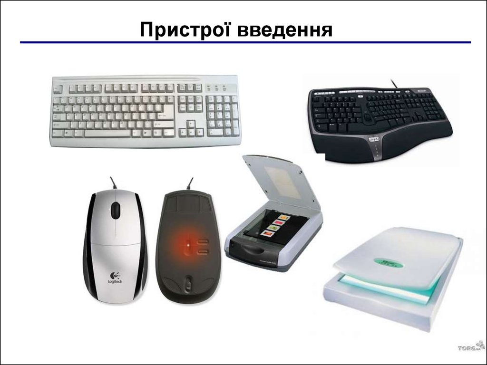

Пристрій введення - пристрій для внесення даних до комп`ютера під час його роботи. Основним пристроєм введення текстових символів та послідовностей (команд) в комп'ютер є клавіатура: Клавіатура - сукупність розміщених у певному порядку клавіш пристрою, що використовується для введення і редагування даних, а також керування виконанням окремих операцій. Клавіша тут виступає як елемент клавіатури, натисканням якого генерується код відповідного знака або ініціюється деяка дія. Клавіатури використовуються в найрізноманітніших пристроях - друкарскьких машинах, калькуляторах, мабільних телефонах, а також є однією з комплектуючих комп`ютера. Основні типи клавіатур за призначенням - музичні та алфавітно-цифрові.
Інші пристої введення:
Сканер - пристрій що аналізуючи певний об'єкт, створює його цифрове зображення. Процес отримання такого
зображення називають скануванням. Веб-камера - цифрова відео чи фотокамера, яка має можливість в реальному часі фіксувати
зображення, призначені для подальшої передачі по мережі Інтернет.
Відеокамера - електронний кінознімальний апарат, пристрій для отримання оптичних образів об'єктів за допомогою зйомки на
світлочутливому елементі, пристосований для запису або передачі зображення в русі. Мікрофон - прилад, що перетворює звукові
коливання на електричні та застосовується для передачі звукових коливань на велику відстань. Мікрофони використовуються у
багатьох пристроях, таких як телефони і магнітофони, у звукозапису та відеозапису, на радіо і телебаченні, для радіозв'язку,
а також для ультразвукового контролю та вимірювання. Маніпулятор типу миша - один з вказівних пристроїв уведення, який дає
змогу користувачеві через інтерфейс взаємодіяти з комп'ютером. Тачпад, або сенсорна панель - вказівний пристрій введення,
що застосовують, частіше за все, в ноутбуках. Джойстик - пристрій-рукоятка керування у відеоіграх: важіль на підставці,
який можна відхиляти у двох площинах. На важелі можуть бути різного роду гашетки і перемикачі. Словом «джойстик» в побуті
називають важіль управління, наприклад, в мобільному телефоні.